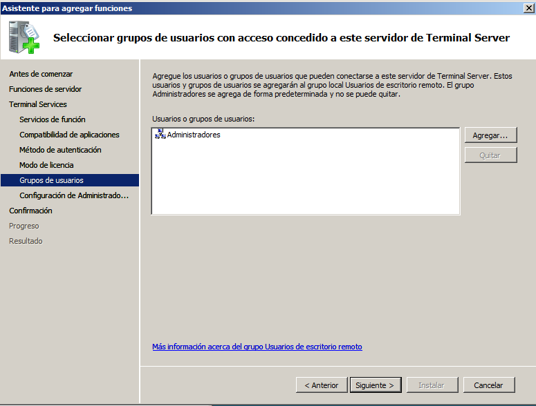
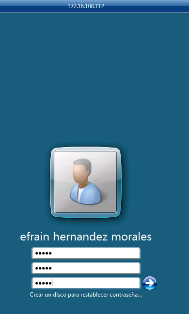
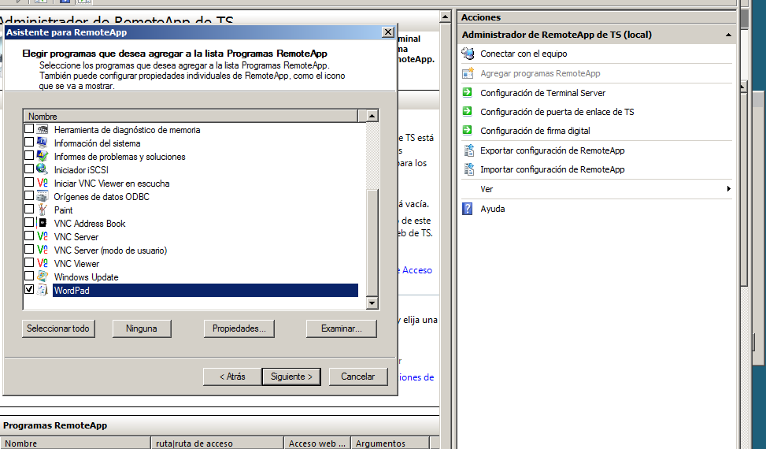
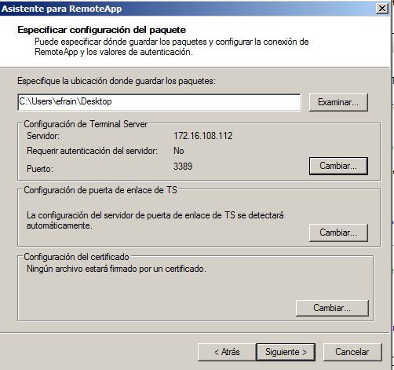

- Módulo: Administración de Sistemas Operativos
- Título del trabajo Acceso Remoto
- Componentes del grupo: Efraín Hernández Morales
- Curso Académico: 2014/2015
- Fecha de entrega: 07 de Octubre de 2014
1. Escritorio remoto con VNC
1.1 Acceder a Windows - desde Windows.
- Ambas máquinas:
- Las ponemos en modo puente.
- Le asignamos una ip estática.
- Instalamos tanto el VNC Viewer como el VNC Server.
Seguidamente vamos al VNC Viewer de Windows 7 (que lo utilizaremos como cliente) y ponemos la ip del Windows Server (que lo utilizamos como vnc server) y nos conectamos.
Y ya estamos conectados en el servidor mediante vnc.
1.2 Acceder a Windows - desde Linux
- Ambas máquinas:
- Las ponemos en modo puente.
- Le asignamos una ip estática.
- Instalamos tanto el VNC Viewer como el VNC Server, en este caso, también en nuestro Lubuntu.
A continuación, vamos al Viewer de nuestro Lubuntu (que es el que utilizaremos como cliente) y ponemos la ip del vnc server de nuestro Windows Server.
Y ya estamos conectados en el servidor mediante vnc.
1.3 Acceder a Linux - desde Linux.
- Ambas máquinas:
- Las ponemos en modo puente.
- Le asignamos una ip estática.
- Instalamos tanto el VNC Viewer como el VNC Server.
Seguidamente, vamos al Viewer de nuestro Lubuntu (que es el que utilizaremos como cliente) y ponemos la ip del vnc server de otro Lubuntu.
Y ya estamos conectados de forma remota en el otro lubuntu mediante vnc.
1.4 Acceder a Windows - desde Windows.
- Ambas máquinas:
- Las ponemos en modo puente.
- Le asignamos una ip estática.
- No hay que instalar nada, ya que windows trae por defector el software rdp instalado.
- Le activamos el control remoto.
Seguidamente, vamos al Windows 7 y seleccionamos el programa de escritorio remoto y ponemos la ip de nuestro servidor de windows server 2008.
Y ya estamos conectados de forma remota en el otro lubuntu mediante vnc.
2. Escritorio Remoto con RDP
2.1 Acceder a Windows - desde Windows.
- Ambas máquinas:
- Las ponemos en modo puente.
- Le asignamos una ip estática.
- Instalamos tanto el VNC Viewer como el VNC Server.
Seguidamente vamos al VNC Viewer de Windows 7 (que lo utilizaremos como cliente) y ponemos la ip del Windows Server (que lo utilizamos como vnc server) y nos conectamos.
Y ya estamos conectados en el servidor mediante vnc.
2.2 Acceder a Windows Server 2008 - desde Linux.
- Ambas máquinas:
- Las ponemos en modo puente.
- Le asignamos una ip estática.
- No hay que instalar nada en windows ya que trae por defecto el software rdp instalado.
- En Linux, en cambio, le instalé el reminna, ya que no trae ningún software de visor rdp por defecto "sudo apt-get install reminna".
Seguidamente, vamos a Linux y configuramos el reminna para realizar la conexión remota mediante rdp.
Y ya estamos conectados de forma remota en otro windows mediante rdp desde un Linux.
2.3 Acceder a Linux - desde Windows.
- Ambas máquinas:
- Las ponemos en modo puente.
- Le asignamos una ip estática.
- No hay que instalar nada en windows ya que trae por defecto el software rdp instalado.
- En Linux, en cambio, le instalé el xrdp, ya que no trae ningún software de servidor rdp por defecto "sudo apt-get install xrdp".
Seguidamente, vamos a Windows y abrimos el software de escritorio remoto y ponemos la ip de nuestro Linux.
Y ya estamos conectados de forma remota en otro linux mediante rdp desde un windows.
3. Servidor de Terminales
- El primer paso es ir a Administración del Servidor --> Agregar Funciones y buscamos la opción de "Terminal Services".
- Le damos a siguiente, y en los servicios de función, seleccionamos "Terminal Server".
- En el siguiente paso, le ponemos que no requiera ningún nivel de autenticación de red y cualquier cliente con el software de escritorio remoto que trae windows por defecto podrán conectarse.
- Ahora, en este paso se encuentran los tipos de licencia. Existen dos tipos de licencias de acceso de cliente de Terminal Services (CAL de TS):
- CAL por dispositivo de TS: Cuando se usa el modo de licencia Por dispositivo y un dispositivo o equipo cliente se conecta a un servidor de Terminal Server por primera vez, de forma predeterminada se emite una licencia temporal para el dispositivo o equipo cliente. Cuando un dispositivo o equipo cliente se conecta a un servidor de Terminal Server por segunda vez, si el servidor de licencias está activado y hay disponibles suficientes CAL por dispositivo de TS, el servidor de licencias emite una CAL por dispositivo de TS permanente para el dispositivo o equipo cliente.
- CAL por usuario de TS: Una CAL por usuario de TS concede a un usuario el derecho de acceso a un servidor de Terminal Server desde un número ilimitado de dispositivos o equipos cliente. El Licencias de TS no exige las CAL por usuario de TS. En consecuencia, pueden producirse conexiones de cliente independientemente del número de CAL por usuario de TS que haya instaladas en el servidor de licencias. Esto no exime a los administradores de tener una CAL por usuario de TS válida para cada usuario a fin de cumplir con los requisitos de los Términos de licencia del software de Microsoft. La falta de una CAL por usuario de TS para cada usuario cuando se usa el modo de licencia Por usuario representa una infracción de los Términos de licencia.
Nuestra elección será la de "Configurar más adelante", ya que no tenemos licencia y estamos haciendo pruebas, por lo que aprovecharemos los días de prueba que nos da el software (aunque haya puesto en la imagen la de usuario es que tuve que hacerlo de nuevo y no me di cuenta de reemplazarlo en la captura).
- A continuación, añadimos en el grupo de usuarios de acceso contenido a los administradores y seguidamente finalizamos la instalación.

- Ahora, nos vamos a Usuarios y grupos del servidor y creamos un usuario y a ese usuairo lo metemos en el grupo de propiedades de usuarios de escritorio remoto.
- Ya, por último, nos vamos a nuestra máquina cliente y ponemos la ip del servidor en nuestra conexión de escritorio remoto. Y después entramos con los datos de nuestro usuario creado para el escritorio remoto.


4. Aplicaciones remotas mediante RemoteApp
- Tras haber instalado el Terminal Services en el punto anterior, nos ahorramos este paso. Vamos a Inicio -> Herramientas administrativas -> Terminal Servies -> Administrador de RemoteApp de TS.
- En la configuración del remoteapp lo dejamos de la siguiente manera cuyo puerto por defecto rdp es el 3389.
- En la configuración común de rdp ponemos lo siguiente:
- Después vamos al asistente para remoteapp y elegiremos un programa. En este caso, wordpad.

- Seguidamente, botón derecho sobre el programa y le damos a "Crear archivo rdp".

- Por último, en el archivo creado .rdp con el botón derecho pinchamos en "Conectar" y ya se nos muestra solo el wordpad.

- Seguidamente, podemos llevarnos el archivo rdp a nuestra máquina cliente y ejecutarlo de forma remota.